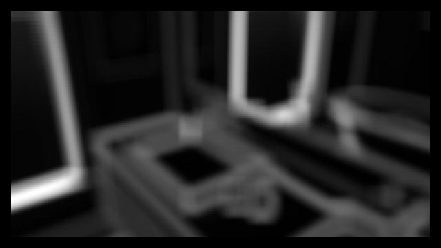
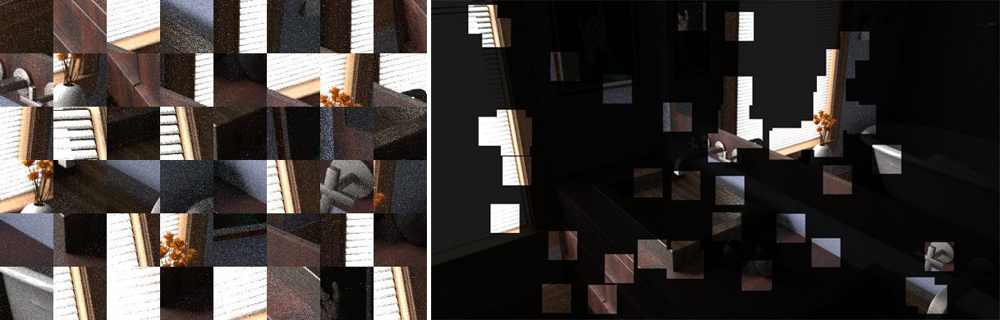
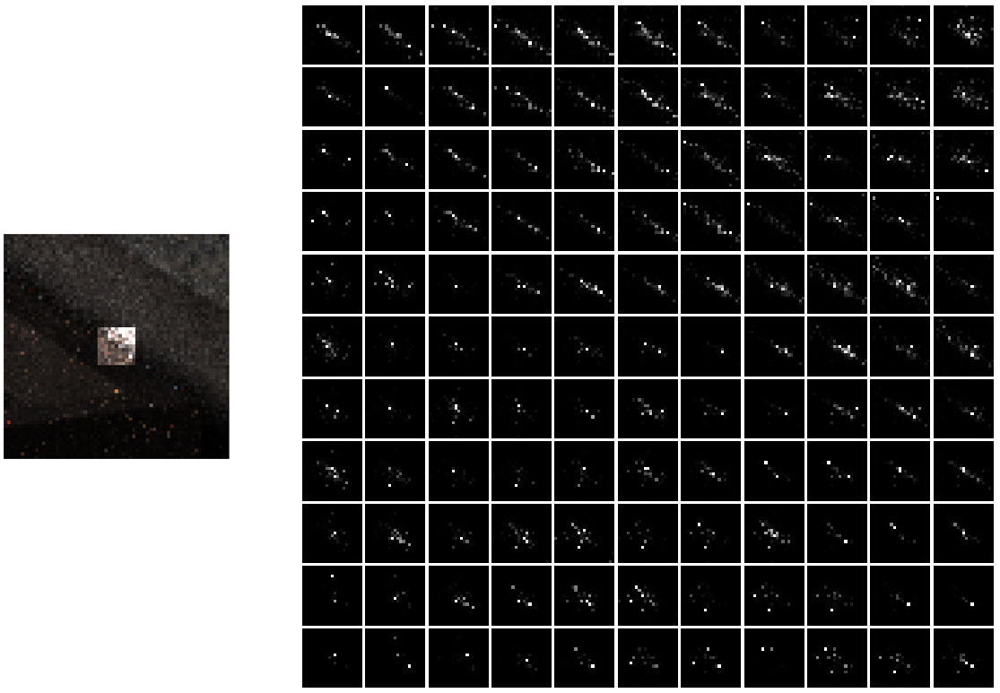
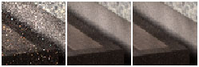

So far, I've implemented a KPCN pipeline as per Kernel-Predicting Convolutional Networks for Denoising Monte Carlo Renderings (Bako et al.). This includes data sampling, network construction, network training, visualization, and evaluation routines, all of which are highly configurable. As far as I'm aware, I have incorporated all KPCN components described in sections 4 and 5 of the paper, i.e. excluding DPCN and analysis alone, with the caveat that my data, memory, and time bandwidths have hitherto been lacking in comparison.
I thought I'd start with an example.
This is the network applied to an image from the validation set.
|
|
It's part of the way there, but there's still a lot of overblurring and artifacts. Each of the diffuse and specular networks was trained for 30,000 iterations (~100 epochs) on 1500 65x65 patches sampled from 150 different renderings of a single scene. By contrast, Bako et al. trained each network for 750,000 iterations on 240,000 65x65 patches sampled from 25 "diverse frames." They then fine-tuned the complete system for an additional 250,000 iterations, claiming that this helps recover detail and obtain sharper results. While I have the infrastructure set up to do this, I haven't gotten around to using it as part of a full training session yet.
I have not sampled the same number of patches, nor trained my networks to a comparable degree, for the simple reason that I have not yet had the time necessary to sample or train. In order to avoid loading EXR files at runtime upon each instance of training, I load them beforehand and sample/save patches into TFRecord files. However, this is time-consuming.
You are perhaps wondering about the EXR files I've mentioned. They come from Disney Research's denoising dataset, which contains renderings of ~180 randomized configurations for each of eight scenes (generated using Benedikt Bitterli's Tungsten renderer). For each scene configuration, there are renderings at five different sampling rates: 128, 256, 512, 1024, and 8192 spp. I have been using 256 spp inputs and 8192 spp reference images, although in the future I plan to switch to 128 spp inputs. Notably, the dataset also includes auxiliary feature buffers for each rendering (diffuse, specular, albedo, depth, normals, visibility, and variances), meaning it has everything necessary for Bako et al.'s KPCN setup.
Like the paper, I sample 65x65 patches to use for training according to a multivariate PDF based on color and normal variances (specifically a weighted combination of these). The paper samples via dart throwing and adaptive pruning; I am not exactly sure how they implement this, but when I took this approach I ended up with a lot of low-variance patches, perhaps due to the way I was adjusting probabilities after acceptances and rejections. I tried a number of slight variations on this kind of sampling, including using other feature buffers to compute the PDF, eventually settling on the basic method of sampling patch indices without replacement according to each index's probability in the PDF.
This is what one of my PDFs looks like.
|

|
Here are the patches sampled according to it.
|

|
As decreed by Bako et al., my network architecture is that of a 9-layer vanilla CNN with 100 5x5 kernels and ReLU activations in each layer, and a per-kernel softmax at the end. I experimented with batch normalization and different activations, but based on a brief observation these adjustments didn't seem to help. During training, the network takes processed 65x65 patch inputs as previously mentioned. Of course, since the network is fully convolutional it is happy to take inputs of any shape. It then predicts 21x21 local filtering kernels, i.e. a kernel centered around each pixel. Examples of these can be seen below.
|

|
These are the per-pixel kernels corresponding to each pixel in the lit region on the left. They were output by my network after being overfit to this and 49 other patches (i.e. I confirmed that my network is able to overfit to a small dataset of 50 patches). Below is an example of the network's prediction for a patch, after being trained on it and 49 other patches. In itself this would not appear to be very informative; however, it also serves as an example of an input and reference patch.
|

|
An execution of a network on a 720p image takes less than a second. Note that I have two networks (one each for diffuse and specular image components).
To conclude: I realize that my results are a little subpar next to the paper's. Hopefully, my KPCN denoising pipeline is merely being held back by a lack of data and training time. Over the next week, I hope to rectify this by sampling more data and training for more iterations.
In the next month, I hope to work out the base KPCN and move on to implementing the more recent paper Denoising with Kernel Prediction and Asymmetric Loss Functions (KPAL). For full application, the KPAL method will require temporal sequences of renderings that I currently do not have. I will make an attempt to generate my own sequences, although if it seems too intractable I may ignore KPAL's temporal aspect. Toward the end of generating my own sequences, I also still intend to write my own path tracer. I did not get around to this for the milestone deadline as I found Disney's denoising dataset instead.